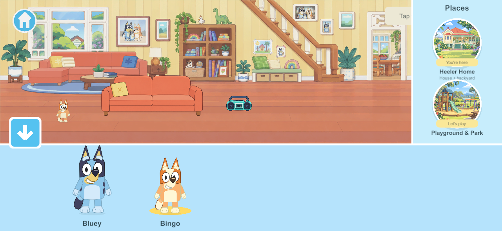
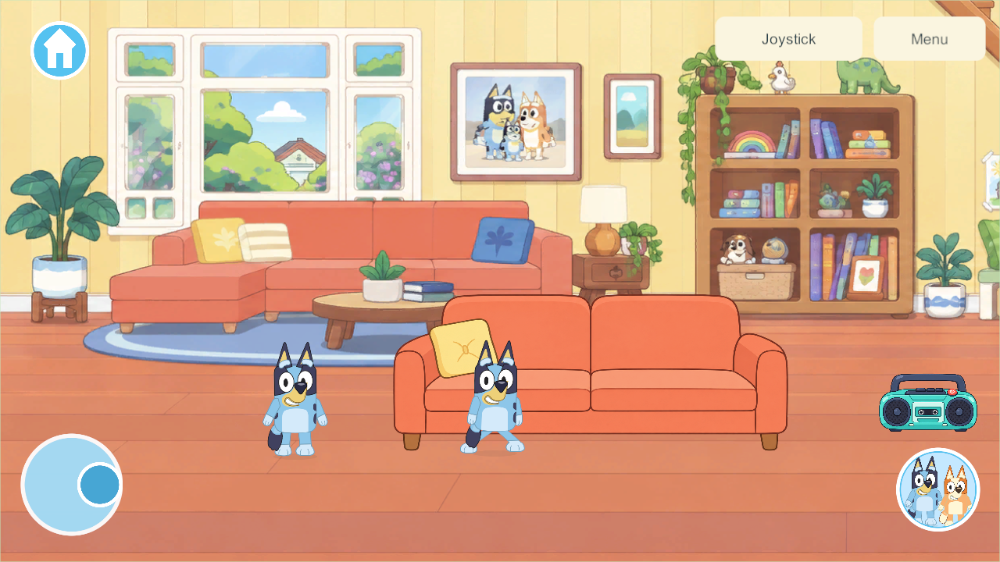

Current build plan · Editable source
Walking and home chooser revision — build 118
September 26, 2026 · WALK-01 / CHAR-01, G6 character presentation. Build 116 was rejected by the user: the walk looked worse despite passing engineering checks. Revision 118 corrects cadence, facing, arm phase and crossing legs, alongside the requested single-home menu and unobscured character selection. Native validation and retained Android delivery passed; user visual acceptance remains separate from technical checks.
What changed after the feedback
The second research investigation identified five weaknesses in 116: excessive cadence, reversed interpretation of the artwork's facing, arm/leg phase mismatch, excessive overlapping motion and a still-image verification gap.
The replacement uses 3.5 steps/second at full walking speed for both characters, down from 5 for Bluey and 6.10 for Bingo. It preserves the existing 210-unit gameplay speed. The source art now faces in the direction of travel. Pelvis height follows authored contact/down/passing/up values, with a quiet forward lean, opposite arm/leg swing and reduced tail motion. Passing feet lift less than in 116. Horizontal walking brings the frontal drawing's hip attachments toward a common walking lane so the legs no longer form the X shape found in the 117 preview. The face and torso remain connected; source SVGs and exported textures are unchanged.
The world chooser now has five destinations, including one Heeler Home labeled House + backyard. Selecting that entry anywhere on the property closes the menu without a trip, teleport or loading screen. Returning from Creek or another world still uses the real travel/loading barrier. Existing garden save/network identifiers remain compatible; this is not a saved-world migration.
Opening character selection fits the real world above the horizontal shelf and left of the place rail, keeping bottom-edge characters visible. Switching to Bingo updates the actual character in that unobscured scene. Closing restores the previous camera. Player coordinates, objects and other players remain unchanged.
Scope and limits
The small UI limb mesh remains a presentation technique over existing editable layered art. Four active limbs use 63 vertices each; this is not a measured physical-device performance result. Independent side/back drawings and authored turn poses remain future work. Controls, root speed, gameplay authority, save schema and content protocol are unchanged. G6 and the full house remain incomplete.
Verification of revision 118
| Check | Result and limit |
|---|---|
| Actual character rig | All 12 combinations pass: Bluey/Bingo, left/right, 30/60/120 FPS sampling. Equal distance gives equal phase, maximum steady stance drift is 0.00098 canvas world units, and lifted feet clear the floor. Cadence and artwork-facing checks now supplement contact mathematics. |
| Complete-cycle preview | 180 native frames sampled at 60 FPS, showing both characters starting, walking right, reversing and stopping. The 117 preview exposed crossed-leg silhouettes; 118 corrects the hip attachments. This is a deterministic in-place preview, not measured device frame rate. |
| Two actual isolated clients | Bluey and Bingo walk, reverse and stop in the home at unchanged gameplay speed. Slower carrying keeps the real bucket assigned to one holder. Local and remote traces are retained. |
| Phone and tablet chooser | Both aspect ratios show bottom-edge Bluey, then Bingo after selection, completely inside the world viewport. One Home bubble resumes either end of the property without moving players or items. Creek-to-home travel retains acknowledgement and scenery readiness. Real joystick movement crosses the house/backyard boundary without a trip or a new visit. |
| Home regression | All five groups pass on 118: sofa occupancy/switching, radio/dance/mute, trampoline/exit, shed storage/travel/retrieval and offline cold reopen. Earlier HOME-01's 92 core checks remain historical; they were not rerun for this presentation change. |
| Builds | Fresh Windows client/server and signed Android release 118 succeed. Build provenance and installed-artifact checks are recorded in the delivery evidence. |
The mathematical and UI checks do not declare the revised walk visually accepted. The user rejected 116 despite its passing tests; approval of 118's performance remains open.
Full-cycle preview
Open the native preview. Playback duration is three seconds, including start, reversal and stop. Original art is enlarged for inspection; this is separate from the real-home captures below.
Character selection on a phone

Real-home walking pose

Reproducible evidence
- Walking result, 12 rig trials, chooser and property checks, home regression, delivery verification.
uv run --offline --with cryptography python Tools/Test-WalkAnimation.py 118; the old comparison uses114 --baseline.uv run --offline --with cryptography python Tools/Test-HomeNavigation.py 118.uv run --offline --with cryptography python Tools/Test-HomeWorld.py 118.- These tests use isolated players and temporary servers, never the live family world. The historical
home/gardenarrival aliases are used only for explicit property fixture setup in old interaction tests; the new chooser test separately exercises the real five-destination menu. - Local raw evidence:
LocalData/SharedGarden/3588142847cf4105bde3c498df755d6f/walk/,7d4450360be2474ba10f16a9160c76ee/home-navigation/,7bdcee2e5df744278c1bb8a3e98dc4b3/home/.
Android delivery and next work
Samsung updated 116 → 118 in place, using the existing package/signing identity and adb install -r. The installer pulled the installed APK back and matched it to the freshly signed artifact, then launched the exact package. A phone screenshot shows the home and the revised walking character. Both prior world IDs, every toy field, home state, player count and player identity remain intact; only the active player's x/y changed while the user was walking. No uninstall or clear-data operation occurred.
All 681 Unity/source-art entries in the Android build manifest matched before final whitespace normalization. Windows matches the same inputs except the subsequent Android version-code metadata. Private installation evidence: LocalData/Verification/android-phone-f5f149dd25264a86a3870291e0e02271/installation.json; backups and phone captures: LocalData/Verification/android-walk-118/. These stay outside Git.
Installed APK SHA-256: 9d2f4762271ef5500554500d52b8bfb8f15891a8aad576398e279be37983a80c. The looping preview and native screenshots are technical evidence; user acceptance of the revised performance remains open.
The live family server/helper remains 110/content 4; the phone's home content is 5/schema 4 and continues in solo play until a separately qualified shared rollout. iPads/iPhone remain 101 and their update stays deferred. Native 16 KB qualification and physical A10 memory/frame-time checks remain open; the Android device uses 4 KB pages.
Continue refining the walk from user feedback, then resume the home kitchen/storage/food sequence, followed by durable bedroom integration. Full roster/directional artwork and remaining phase gates stay open. Current plan.